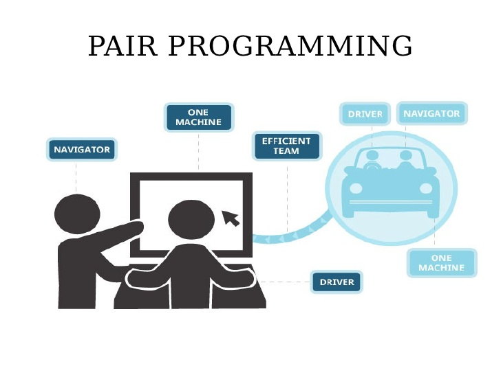

Hi everyone, I am a Phase-0 Devbootcamp student and we are finishing week-5 for now. So far I had around 15 pairing sessions. What is pairing session will you ask? The answer is pretty clear, pairing session - is a special kind of session when you work on programming challenges with one of the students from your cohort. We are required to work together at least 3 times per week(2 pairing sessions and 1 guided pairing session) and at least 45 minutes with every person, but being honest I can say that some challenges took us more than 3 hours.
What it feels like to work with somebody else? As we all know, we have 2 indexes measuring personality traits: introverts and extroverts. Extroverts are people who get energy from other people, but introverts are people who find energy and pacification from silence and solitude. I would classify myself to extroverts, I have always loved working with other people. I feel like I learn more when I talk to somebody than when I read and learn just by myself. Very important step in pairing session for me is a real conversation, before we start our coding challenge, I like to understand what kind of personality my partner is, and it helps me to be more relaxed during the whole session. We came to programming from different working fields, and I have found that working on the challenge we have different sight on solution that is depending from our previous experience and it is always interesting to see how other people thing and speak their thoughts loudly. But we all have something in common “passion to learn how to be a web developer”, and this goal make us together.
What is fun and rewarding from pairing session? Before I started DBC, I thought that online education will be boring and very individual, but it is absolutely not. Every day we ask each other questions in Google+ Community, we text each other and ask how we all are doing. For people who are a little shy as me, there is always reason to meet and talk to new people, you have to make 2 pairing session each week, so it means you need to find a partner for you :) The most important benefit from pairing session is exchange of experience and ideas. But this part I can say is very hard for me. Being not a native speaker, is very challenging for communication and expressing your thoughts and ideas, but I found that all “pairs” that I have had were very tolerate and loyal to me, and even sometimes people understood me from the first word, I just started explaining my idea, and my partner was like “Oh I see what you mean, is it blah-blah-blah?”. Since we have different programming background and experience, I’ve met people who were confused with the topic, and I helped them to learn something new, as well as I’ve met people who were step ahead, and they helped me to understand some stuff. But in both of these cases you benefit because you learn something specific, or you learn how to teach and how to explain it to others.

And now we came to one more interesting thing, which is Feedback :) What is feedback in DBC and how do we give and get it from each other? Feedback is very important thing for your learning process. You never know how do you look from the side, and what you need to improve. For this we have a special Feedbackinator, where we submit our feedback to people who we were pairing with and it is always anonymous. Sure the most challenging is to write a good feedback to your partner, because it should be Actionable, Specific and Kind. It doesn’t look complicated, but when it’s time to submit your feedback you are like “OoOu” what do I need to write here? But with time it comes easier and easier. I still have difficulties with mentioning things that person need to catch up. First I thought like “Who am I to tell people what to learn and what to read? I am not ideal too, so maybe I would better keep silent?”, but no, please don’t think as me :) All students need your constructive and actionable feedback, cause it will motivate people to learn more, and be better.

So far I have received all different kinds of feedback, mostly sure it was positive, but people mention my shortcomings, so I know exactly what I need to improve. I know some people can resent from constructive feedback, but reading other’s people blog posts I see that understanding of a feedback comes to them in a few days after :)
Here are few things that I want to improve based on feedback I have received:
1)set a time box, and finish challenge in the right time
2)work more on challenges outside of the Curriculum
3)be more confident and not compare myself to other people
4)practice, practice and again practice and work really really hard!
Yeah, I did it :) Hopefully I didn’t forget to say anything important, feel free to give me feedback on this blog post in twitter or e-mail. You can find my contacts at the very bottom of the page.
Thank you all for attention.
Best,
Iulia